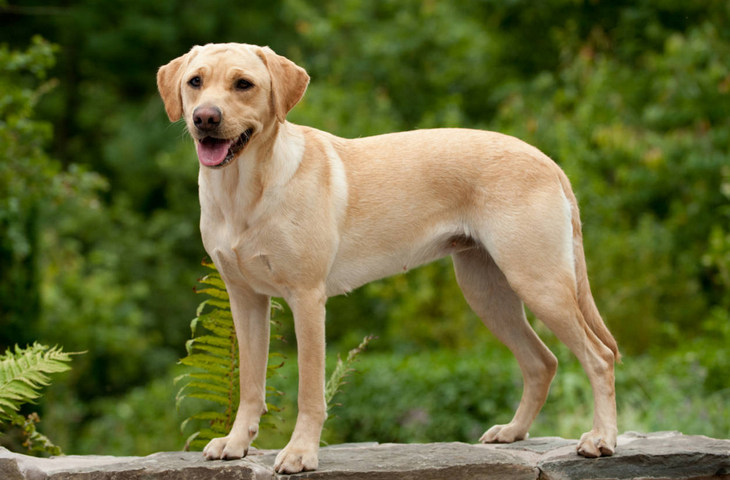
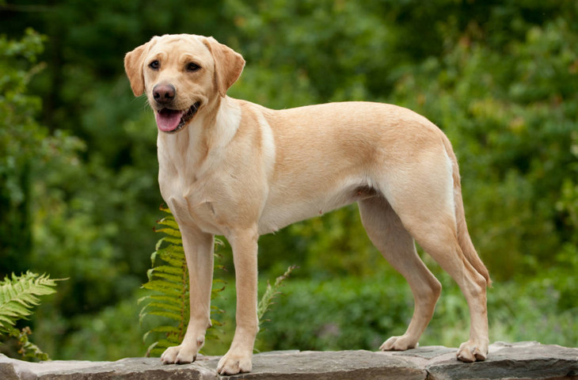

Порода
Особенности


Порода |
Особенности |
|
Австралийская овчарка
|
Австралийские овчарки известны своей жизнерадостностью, дружелюбием и высокой обучаемостью. Они являются прирожденными пастухами и могут самостоятельно принимать решения в экстренных ситуациях. Эти собаки прекрасно ладят с детьми и другими животными, что делает их отличными компаньонами. |
|
Акита-ину
|
Акита-ину обладают независимым и упрямым характером. Они требуют терпеливого и последовательного воспитания. Акита-ину нуждаются в регулярных физических нагрузках — минимум два часа прогулок в день. |
|
Лабрадор-ретривер
 |
Лабрадоры известны своей дружелюбностью и преданностью. Они легко ладят с детьми и другими животными, что делает их отличными компаньонами для семей. Лабрадоры легко поддаются дрессировке благодаря своему умению учиться и желанию угодить хозяину. Они плохо переносят одиночество и могут проявлять деструктивное поведение при недостатке внимания. |
|
Бигль
|
Бигль — это порода собак, известная своим дружелюбным и игривым характером. Они относятся к группе гончих и были выведены для охоты, что определяет их активность и энергичность. Несмотря на высокий интеллект, бигли могут проявлять упрямство. |
|
Чихуахуа
|
Чихуахуа считается самой маленькой породой собак в мире, вес которой колеблется от 1 до 3 кг. это энергичные и смелые собаки, которые часто не осознают своего маленького размера. Они могут проявлять агрессию к более крупным собакам, защищая своих владельцев. |
|
Сибирский хаски
|
Хаски отличаются упрямством и своенравием. Порода требует много физической активности. Хаски нуждаются в длительных прогулках и играх, иначе могут проявлять деструктивное поведение, например, грызть вещи в доме. Вместо лая хаски склонны к протяжному вою. |
|
Немецкий шпиц
|
Немецкие шпицы имеют характерную пышную шерсть. Шпицы известны своим умом и сообразительностью. Они легко поддаются дрессировке и подходят для начинающих собаководов. Эти собаки преданы своим хозяевам, любят общение и активно участвуют в жизни семьи. |
|
Французский бульдог
|
Эти собаки умны, но упрямы, им быстро надоедает рутина. Дрессировщику придется проявить изобретательность и терпение.Французские бульдоги мало шумят, редко лают, хотя встречаются исключения.Питомцам не нужна высокая физическая активность. Достаточно регулярных прогулок и контроля массы тела. |
|
Английский кокер-спаниель
|
Английский кокер-спаниель – подружейная охотничья собака, выведенная в Великобритании специально для поиска и подъема под выстрел пернатой дичи. Кокер-спаниели имеют мягкую, шелковистую шерсть средней длины, которая часто окрашена в различные цвета, включая черный, рыжий, печеночный и различные комбинации. |
|
Вельш-корги
|
Вельш-корги — это порода пастушьих собак, происходящая из Уэльса, известная своим дружелюбным характером и компактным телосложением. Вельш-корги имеют короткие лапы и длинное тело, что делает их легко узнаваемыми. Корги известны своей умной и игривой натурой. Они легко поддаются дрессировке и любят участвовать в различных активностях с хозяевами. |